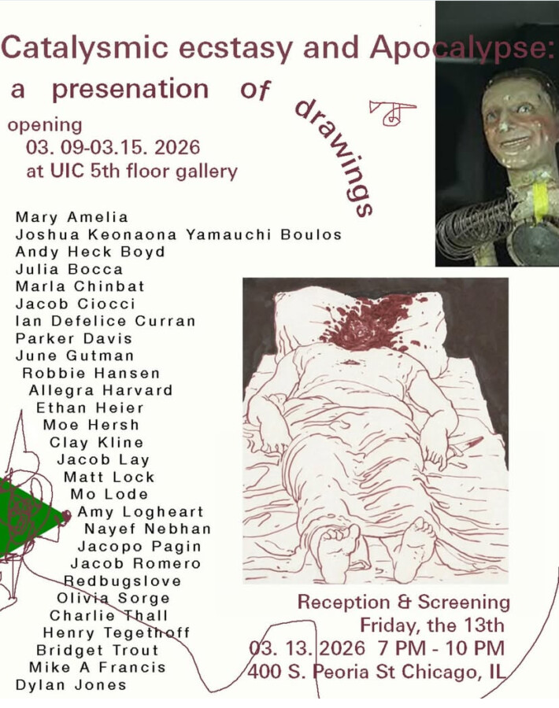

Cataclysmic Ecstasy and Apocalypse: a Presentation of Drawings
A show of over 80 drawings by 27 international artists, curated by Mary Amelia. Features a screening of a film by James Deusing and works by Vitamin C Wig.
The medium of drawing unveiled→ an innate method of processing new worlds. This is an immediate and direct imprint of real living experience, no lying!, a deliberate vision closest to what we see, funneled into the most potent and intimate glimpse on Earth. We are accessing the unconscious imagination ruled by ether* [the upper pure], and the processing of a new world becoming- sort of like the drawings of children. This body of work deals in automatic writing and premonitions– industrialization, dreams, death, mental health, mundanity, everyday life, utopia, and future earth landscapes. This is why the act of drawing is so damn hard to grapple with. It is like writing without the violence of language. It employs the fear and simultaneous freedom of direct contact, your body in real time– intuition. Perfect time. We come to recognize Apocalypse as an extension of the spiraling into contemporary life and Anthropocene*.
This exhibition advocates for drawing and writing as a medium that helps us process connatural awareness and preeminence, and may help expel idealistic nostalgia into the infinite nowness. →